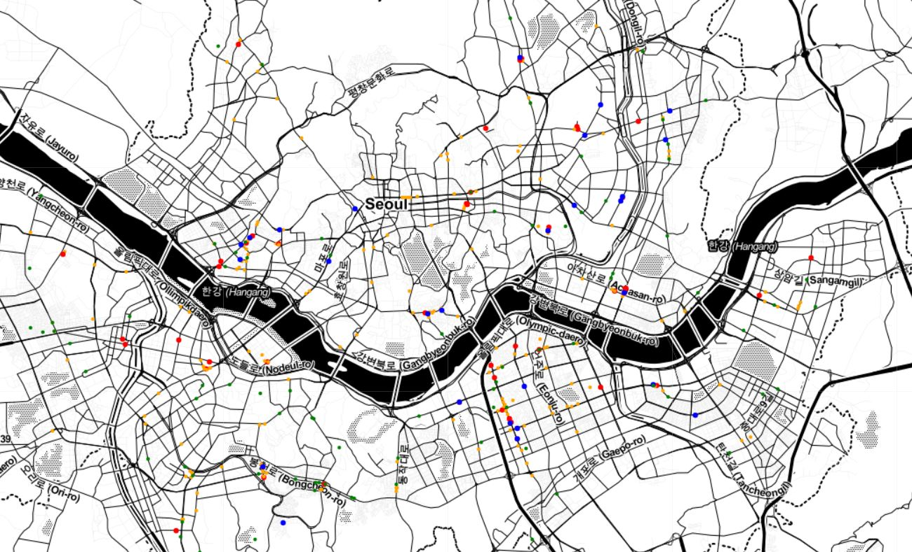

2020년 7월부터 삼성 청년 소프트웨어 아카데미에서 알고리즘 기반의 교육과 함께 DJango FrameWork을 이용한 백엔드 개발, Vue.js FrameWork을 이용한 프론트엔드 개발을 교육 받고 있습니다.
2020년 7월 - 2021년 5월
삼성 청년 소프트웨어 아카데미 넷싸(네트워크 & SSAFY) PJT
삼성전자 네트워크 사업부 멘토와 함께 프로젝트 개발
삼성전자 네트워크사업부 현업 멘토와 함께 프로젝트 진행, 휴대 단말과 PC간의 파일 공유 구글 크롬 확장 애플리케이션 개발을 수행했습니다.
2021년 2월 - 2021년 4월
교통안전공단 자동차안전연구원
자동차인증팀
자동차관리법에 따라 제작을 한 자동차에 대하여 안전기준의 적합 여부에 대하여 실차 확인을 통해 제원측정, 중량분포, 주행장치의 안전성, 안전운행과 관련하여 국토교통부장관이 고시하는 세부사항 등을 확인하는 업무를 수행했습니다.
2020년 2월 - 2020년 6월
SKT
IOT/DATA 사업부
자율주행 기술을 보유한 기업 및 협력 대상에 대한 리서치 진행, Iot/data 사업부의 역량 활용한 BM기획서를 작성했습니다.
2018년 7월 - 2018년 8월
Education
한양대학교
미래자동차공학
공과대학 - 기계공학, 전기/전자공학, IT/소프트웨어 교육
2014 3월 - 2020 2월
Share Hi
휴대 단말과 PC간의 파일 공유 구글 크롬 확장 애플리케이션 개발 프로젝트
Frontend를 담당했으며 크롬 확장 애플리케이션 개발을 담당했습니다. HTML,CSS, JAVASCRIPT 그리고 Vue JS Framework를 사용했습니다. 방문한 웹페이지의 DOM에 Script를 삽입하는 방식으로 언제든지 Background에서 Share Hi 애플리케이션을 실행할 수 있도록 했습니다.
Frontend를 담당했으며 HTML,CSS, JAVASCRIPT 그리고 Vue JS Framework를 사용했습니다. 메인 페이지, 회원관리, 프로필 페이지, 전체적인 CSS를 담당했습니다. 특히 Access Token과 Refresh Token 관리를 통해서 사용자의 로그인을 유지할 수 있도록 구현했습니다.
Django FrameWork을 이용해 서버를, Vue.js FrameWork을 이용해 사용자 UI를 구현한 영화 리뷰, 커뮤니티 사이트
디자인 패턴
영화 하면 떠오르는 것들 (명대사, 포스터, 출연 배우, 티저영상을 넣어보고 싶었습니다) 페이지 구성과 기능
Main Page : 로그인과 회원가입을 통해 다른 컨텐츠를 볼 수 있도록 분리
Signup : 회원가입시 좋아하는 장르 선택으로 추천알고리즘과 연계
Home : 화면에서는 무한스크롤을 이용해 다음 영화 카드를 불러옴 영화 카드 클릭시 영화 세부 정보로 이동
영화리뷰 게시판 : 페이지네이션, 사용자 경험 향상을 위해서 페이지 클릭시 최상단으로 스크롤 자동 이동
내가 쓴 글 : 사용자가 자신이 쓴 글을 쉽게 관리할 수 있게 구현
검색 : 영화 데이터베이스에서 input으로 들어오는 값으로 시작하는 영화 제목을 불러온다. element create를 통해서 구현
네이버 영화 API : 이 API의 단점은 필수 요청 인자로 영화제목이 있어야했다
따라서 이 모든 일련의 과정들 ( 리뷰 글쓰기할 때 영화 제목을 보여주고 올바른 영화 제목을 입력하도록 유도한 것, 검색창에서도 존재하는 영화 제목만을 보여준 것)의 이유는 네이버 API를 사용하기 위함
네이버 영화 API에서 가져오는 정보는 링크, 이는 네이버 영화 사이트 링크로 그 링크에서 copy selector로 html 파일의 정보를 가져와 파이썬 beautifulsoup html 파싱을 통해서 명대사와 영화인 사진을 가져옴
2020년 11월
지능형 모형차 경진대회
MCU (TC275) 보드에 C언어를 임베딩한 경험
라인스캔카메라를 통한 올바르고 안전한 차선 인식 및 횡단보도 인식, 적외선 센서를 이용한 장애물 인식 및 언덕 주행상황 추정, 속도제어를 통한 AEB 구현 알고리즘 설계 그리고 동작까지, ‘안정적이고 빠른 트랙 주행’을 목표로 알고리즘을 설계했습니다.
Linescan Camera의 camera signal processing을 통한 올바르고 안전한 차선 인식 및 횡단보도 인식
Pure pursuit Steering을 통한 모형차의 차선 중앙 추종
IR sensor를 이용한 장애물 인식 및 언덕 주행상황 추정
속도제어를 통한 AEB 구현
2019년 7월
파이썬을 이용한 프로젝트
공학도를 위한 창의적 프로그래밍 과목
이후 저는 C언어 뿐 아니라 파이썬을 익히고자 ‘공학도를 위한 창의적 프로그래밍’이라는 수업을 들었고, 공공데이터를 다루고 시각화하는 것에 대한 프로젝트를 진행한 적이 있습니다. 서울시의 공공 빅데이터를 활용하여 버스 운행이 종료된 시간대에 택시 호출을 많이한 지역들을 통계화하고 시각화한 프로젝트입니다.

서울시는 빅데이터를 활용하는데 관심을 갖고 있었는데
심야버스 노선수립 이외에도 교통사고 감소 등에 빅데이터를 활용했다
서울시 야간버스 노선은 사람들이 버스 운행이 종료된 시간대에 호출을 많이한 지역들을
통계화하여 노선을 만들었다고 한다. 과연 내가 시각화한 데이터와 일치가 할까?
2018년 2학기
소프트웨어를 처음 만나게 한 프로젝트
마이크로프로세서 응용 과목
3학년 1학기에 들은 마이크로프로세서 응용 과목에서 기말 프로젝트로 공기청정기를 제작했습니다. 먼지 센서를 이용해 측정되는 먼지의 양을 입력받아 팬의 속도와 방향을 조절하도록 설계한 이 프로젝트는 저에게 목표 동작을 프로그래밍을 통해 실현시키는 성취감과 프로그래밍에 대한 흥미를 가져다주었습니다.
인피니온 사의 TC237 보드를 사용하여 공기청정기를 제작하는 프로젝트를 수행 주어진 보드의 PWM 과 ADC 그리고 interrupt 기능을 구성으로 dust sensor, servo motor 그리고 motor driver를 활용하여 공기청정기를 만들었고 이 과정에서 시스템에 값을 입력 출력하고 제어하는 것을 직접 해보았습니다.